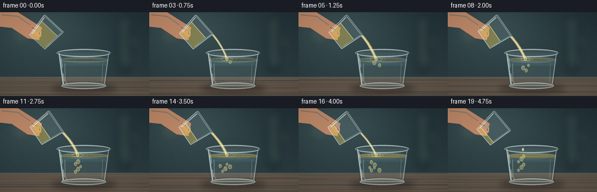
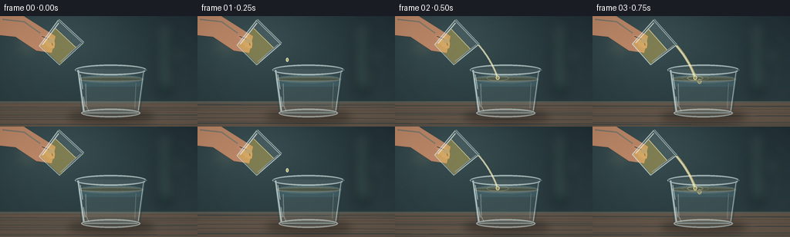

CODING AGENTS AS PIXEL WORLD MODELS
traex/GPT-5.6-Sol · material_0023
点击播放 · 原生 RGB 像素
逐轮保存的候选
回放视频、检查图与代码变化。
每份候选均可单独播放。实际图片检查记录在下方工具轨迹中。
候选 01播放与检查图
点击播放 · 原生 RGB 像素


展开代码变化
--- 上一保存版本
+++ 本次保存版本
@@ -0,0 +1,209 @@
+from pathlib import Path
+import math
+import numpy as np
+from PIL import Image, ImageDraw, ImageFilter
+import artifact_io
+
+W,H,N,S = 256,144,20,4
+rng=np.random.default_rng(17)
+
+def scpts(points): return [(int(x*S),int(y*S)) for x,y in points]
+def ellipse(draw, box, **kw): draw.ellipse(tuple(int(v*S) for v in box), **kw)
+def line(draw, pts, width, fill=None, **kw): draw.line(scpts(pts), width=max(1,int(width*S)), fill=fill, **kw)
+def bezier(p0,p1,p2,p3,n=30):
+ out=[]
+ for t in np.linspace(0,1,n):
+ u=1-t
+ out.append((u**3*p0[0]+3*u*u*t*p1[0]+3*u*t*t*p2[0]+t**3*p3[0],u**3*p0[1]+3*u*u*t*p1[1]+3*u*t*t*p2[1]+t**3*p3[1]))
+ return out
+
+def transform(points,cx,cy,ang):
+ ca,sa=math.cos(ang),math.sin(ang)
+ return [(cx+x*ca-y*sa,cy+x*sa+y*ca) for x,y in points]
+
+def poly(draw, points, fill, outline=None, width=1):
+ draw.polygon(scpts(points),fill=fill)
+ if outline: draw.line(scpts(points+[points[0]]), fill=outline, width=int(width*S), joint='curve')
+
+def rounded(draw,box,r,fill,outline=None,width=1):
+ draw.rounded_rectangle(tuple(int(v*S) for v in box), radius=int(r*S), fill=fill, outline=outline, width=int(width*S))
+
+def compose(base, layer):
+ return Image.alpha_composite(base,layer)
+
+def background(frame):
+ yy,xx=np.mgrid[0:H*S,0:W*S]
+ # soft slate kitchen background with warm light from upper left
+ y=yy/(H*S); x=xx/(W*S)
+ glow=np.exp(-((x-.27)**2/.18+(y-.12)**2/.22))
+ arr=np.empty((H*S,W*S,4),dtype=np.uint8)
+ arr[...,0]=np.clip(33+23*glow+13*y,0,255)
+ arr[...,1]=np.clip(49+28*glow+15*y,0,255)
+ arr[...,2]=np.clip(54+27*glow+13*y,0,255)
+ noise=rng.normal(0,0.8,(H*S,W*S))
+ arr[...,:3]=np.clip(arr[...,:3].astype(float)+noise[...,None],0,255)
+ arr[...,3]=255
+ im=Image.fromarray(arr,'RGBA')
+ # deliberately defocused background forms
+ blur=Image.new('RGBA',im.size,(0,0,0,0)); d=ImageDraw.Draw(blur,'RGBA')
+ rounded(d,(202,12,224,104),7,(15,34,35,80)); rounded(d,(207,20,219,89),4,(109,138,117,40))
+ ellipse(d,(202,7,225,27),fill=(132,157,135,31))
+ ellipse(d,(17,18,54,56),fill=(236,210,137,16)); ellipse(d,(31,8,52,29),fill=(240,223,167,13))
+ for bx,by,br in [(186,30,4),(238,51,8),(24,74,7),(224,82,4)]: ellipse(d,(bx-br,by-br,bx+br,by+br),fill=(215,225,181,14))
+ blur=blur.filter(ImageFilter.GaussianBlur(7*S))
+ im=compose(im,blur)
+ # countertop
+ lay=Image.new('RGBA',im.size,(0,0,0,0)); d=ImageDraw.Draw(lay,'RGBA')
+ d.rectangle((0,111*S,W*S,H*S),fill=(101,86,73,255))
+ d.rectangle((0,111*S,W*S,113*S),fill=(177,157,130,80))
+ # horizontal stone texture
+ for k in range(15):
+ py=(114+rng.random()*30)*S
+ d.line((0,py,W*S,py+rng.normal()*S),fill=(55,46,41,int(rng.integers(4,12))),width=max(1,S//2))
+ return compose(im,lay)
+
+def draw_hand(im,cx,cy,ang):
+ lay=Image.new('RGBA',im.size,(0,0,0,0)); d=ImageDraw.Draw(lay,'RGBA')
+ # arm and palm behind vessel, entering naturally from upper left
+ skin=(191,137,105,255); dark=(137,87,68,120); light=(238,187,148,105)
+ poly(d,[(-8,0),(31,0),(72,26),(67,48),(47,45),(20,27),(-8,24)],skin)
+ # thumb wrapping the glass
+ thumb=bezier((52,25),(68,24),(74,32),(70,42),n=18)+bezier((70,42),(63,43),(58,37),(52,25),n=16)
+ poly(d,thumb,(202,148,112,255))
+ line(d,[(54,26),(66,31),(68,38)],1,(104,63,50,70))
+ # subtle upper highlight
+ line(d,[(3,4),(31,7),(52,22)],2,light)
+ # fingernail
+ ellipse(d,(62,29,70,35),fill=(230,179,151,170))
+ lay=lay.filter(ImageFilter.GaussianBlur(.18*S))
+ return compose(im,lay)
+
+def frame_image(fi):
+ t=fi/(N-1)
+ im=background(fi)
+ # countertop contact shadows
+ sh=Image.new('RGBA',im.size,(0,0,0,0)); d=ImageDraw.Draw(sh,'RGBA')
+ ellipse(d,(88,122,200,140),fill=(15,13,12,90)); ellipse(d,(99,126,190,136),fill=(12,11,10,85))
+ sh=sh.filter(ImageFilter.GaussianBlur(5*S)); im=compose(im,sh)
+
+ # Hand first, behind pouring glass
+ im=draw_hand(im,0,0,0)
+
+ # Main glass body (back and liquid)
+ body=Image.new('RGBA',im.size,(0,0,0,0)); d=ImageDraw.Draw(body,'RGBA')
+ # soft refracted body interior
+ poly(d,[(98,69),(189,69),(181,128),(106,128)],(191,219,222,18))
+ # water body and brighter lower refraction
+ poly(d,[(101.5,82),(186,82),(179.5,126),(107,126)],(116,170,181,68))
+ poly(d,[(106,92),(183,92),(178,124),(110,124)],(183,219,218,29))
+ ellipse(d,(102,76.5,186,87.5),fill=(170,214,216,72))
+ ellipse(d,(103,79,185,85.5),fill=(75,125,137,45),outline=(222,241,237,95),width=S)
+ # underwater caustics
+ line(d,[(111,88),(111.8,117),(115,124)],1.3,(221,244,241,96))
+ line(d,[(176,87),(174.5,120)],1,(231,247,240,72))
+ # oil layer accumulates as a distinct golden lens atop water
+ active=max(0,min(1,(fi-2)/14))
+ thick=0.8+5.0*active
+ oy=81.5-thick*.24
+ poly(d,[(103,oy),(185,oy),(184,oy+thick),(104,oy+thick)],(239,205,91,int(40+50*active)))
+ ellipse(d,(103,oy-2.0,185,oy+3.6),fill=(245,216,110,int(45+48*active)),outline=(255,238,173,int(65+45*active)),width=S)
+ # thin darker lower boundary of oil lens
+ line(d,[(106,oy+thick),(182,oy+thick)],.7,(170,134,50,int(30+35*active)))
+ im=compose(im,body)
+
+ # oil globules and submerged plume during pour
+ blobs=Image.new('RGBA',im.size,(0,0,0,0)); db=ImageDraw.Draw(blobs,'RGBA')
+ if fi>=3:
+ count=min(6,1+(fi-3)//2)
+ for j in range(count):
+ age=(fi-3-j*1.45)
+ if age<0: continue
+ bx=134+5.2*math.sin(j*2.1+fi*.38)
+ by=min(112,85+age*3.0)
+ # older droplets curl upward/slosh left instead of sinking forever
+ if age>8: by=109-(age-8)*3.3; bx-=8
+ rr=2.0+0.6*((j+1)%3)
+ ellipse(db,(bx-rr,by-rr*1.25,bx+rr,by+rr*1.25),fill=(239,204,89,85),outline=(255,238,178,130),width=S)
+ ellipse(db,(bx-rr*.35,by-rr*.8,bx+rr*.15,by-rr*.1),fill=(255,255,220,105))
+ # ripples/splash rings at impact
+ if 2<=fi<=18:
+ phase=(fi%4)/4
+ for j in range(2):
+ rw=8+13*((phase+j*.44)%1)
+ box=(133-rw,79.2-rw*.12,133+rw,82.6+rw*.12)
+ db.ellipse(tuple(int(v*S) for v in box),outline=(255,242,176,int(115*(1-((phase+j*.44)%1)))),width=S)
+ im=compose(im,blobs)
+
+ # Outer main glass rim and walls, crisp highlights
+ gl=Image.new('RGBA',im.size,(0,0,0,0)); dg=ImageDraw.Draw(gl,'RGBA')
+ ellipse(dg,(97,63,190,77),fill=(225,239,237,17),outline=(228,245,244,155),width=2*S)
+ ellipse(dg,(100,66,187,73.7),outline=(84,107,110,105),width=S)
+ # black/slate edge gives glass legibility
+ line(dg,[(98.5,69),(106,126)],1.15,(24,45,49,115)); line(dg,[(189,69),(181,126)],1.15,(24,45,49,115))
+ line(dg,[(101,70),(108.5,124)],2.0,(239,253,249,155)); line(dg,[(186,71),(179,123)],1.2,(241,255,250,140))
+ # fragmented speculars
+ line(dg,[(104,76),(107,95)],.8,(255,255,255,190)); line(dg,[(108,105),(110,118)],1.0,(255,255,255,125))
+ # heavy glass foot
+ ellipse(dg,(105,120.5,182,132),fill=(159,198,201,35),outline=(229,244,240,135),width=2*S)
+ line(dg,[(109,126),(178,126)],1.2,(240,250,244,125))
+ im=compose(im,gl)
+
+ # Pouring vessel: center shifts and rotates gently clockwise then eases back at end
+ if fi<17:
+ tilt=math.radians(43+min(fi,7)*1.8)
+ else:
+ tilt=math.radians(56-(fi-16)*2.0)
+ cx=77+1.0*math.sin(fi*.25); cy=37+0.4*math.cos(fi*.35)
+ vessel=Image.new('RGBA',im.size,(0,0,0,0)); dv=ImageDraw.Draw(vessel,'RGBA')
+ shape=[(-23,-23),(21,-23),(18,19),(-18,19)]
+ shp=transform(shape,cx,cy,tilt)
+ poly(dv,shp,(208,230,225,26),(224,244,241,175),1.3)
+ # oil inside polygon, amount recedes; clipped-ish quadrilateral in local coords
+ remaining=max(.18,.82-.036*max(0,fi-1))
+ level=19-38*remaining
+ oilpoly=transform([(-19,level),(18,level),(18,18),(-17,18)],cx,cy,tilt)
+ poly(dv,oilpoly,(243,208,90,100))
+ # oil surface
+ surf=transform([(-18,level),(18,level)],cx,cy,tilt)
+ line(dv,surf,1.2,(255,238,159,185))
+ # top rim doubled
+ rim=transform([(-23,-23),(21,-23)],cx,cy,tilt)
+ line(dv,rim,3.0,(226,244,240,150)); line(dv,rim,1.0,(62,84,84,155))
+ # side glints
+ line(dv,transform([(-20,-20),(-16,15)],cx,cy,tilt),1.5,(255,255,250,180))
+ line(dv,transform([(19,-20),(16,15)],cx,cy,tilt),.8,(255,255,255,120))
+ im=compose(im,vessel)
+
+ # Stream drawn last from upper right lip into glass
+ stream=Image.new('RGBA',im.size,(0,0,0,0)); ds=ImageDraw.Draw(stream,'RGBA')
+ lip=transform([(21,-23)],cx,cy,tilt)[0]
+ if 2<=fi<=17:
+ strength=min(1,(fi-1)/3)*min(1,(18-fi)/3)
+ wav=math.sin(fi*.7)*1.2
+ p=bezier((lip[0],lip[1]+1),(lip[0]+8,lip[1]+10),(127+wav,64),(133,80.5),36)
+ line(ds,p,3.8*strength+1.1,(244,217,120,int(105+70*strength)))
+ line(ds,p,1.15,(255,249,210,int(180+55*strength)))
+ # bright thread edge
+ edge=[(x-1.2,y) for x,y in p]
+ line(ds,edge,.55,(255,255,241,190))
+ # bead at impact
+ ellipse(ds,(130.5,77.5,135.5,83),fill=(249,220,111,100),outline=(255,247,198,185),width=S)
+ elif fi==1 or fi>=18:
+ # falling final / first drops keep the action legible
+ dropy = 57 if fi==1 else 62+(fi-18)*9
+ dropx = lip[0]+8 if fi==1 else 129
+ ellipse(ds,(dropx-1.7,dropy-2.7,dropx+1.7,dropy+2.7),fill=(248,219,120,165),outline=(255,247,208,220),width=S)
+ im=compose(im,stream)
+
+ # global subtle warm reflected light and vignette
+ arr=np.array(im.convert('RGB')).astype(np.float32)
+ yy,xx=np.mgrid[0:H*S,0:W*S]
+ vig=1-0.13*np.clip(((xx-W*S/2)/(W*S*.72))**2+((yy-H*S/2)/(H*S*.78))**2,0,1)
+ arr*=vig[...,None]
+ arr=np.clip(arr,0,255).astype(np.uint8)
+ out=Image.fromarray(arr).resize((W,H),Image.Resampling.LANCZOS)
+ return np.array(out,dtype=np.uint8)
+
+frames=np.stack([frame_image(i) for i in range(N)],axis=0)
+artifact_io.save(frames,Path(__file__).resolve().parent)
+print('saved',frames.shape,frames.dtype)
可观测工具轨迹
实际执行的命令与返回图片。
命令 1exit 0
/bin/bash -lc "cat prompt.txt && printf '\\n---GENERATION_RULES---\\n' && cat GENERATION_RULES.md && printf '\\n---TASK_SPEC---\\n' && cat task_spec.json"
命令 2exit 0
/bin/bash -lc "find . -maxdepth 2 -type f -printf '%p\\n' | sort"
命令 3exit 0
/bin/bash -lc 'cat artifact_io.py'
命令 4exit 1
/bin/bash -lc "cat > generate.py <<'PY'
from pathlib import Path
import math
import numpy as np
from PIL import Image, ImageDraw, ImageFilter
import artifact_io
W,H,N,S = 256,144,20,4
rng=np.random.default_rng(17)
def scpts(points): return [(int(x*S),int(y*S)) for x,y in points]
def ellipse(draw, box, **kw): draw.ellipse(tuple(int(v*S) for v in box), **kw)
def line(draw, pts, width, **kw): draw.line(scpts(pts), width=max(1,int(width*S)), **kw)
def bezier(p0,p1,p2,p3,n=30):
out=[]
for t in np.linspace(0,1,n):
u=1-t
out.append((u**3*p0[0]+3*u*u*t*p1[0]+3*u*t*t*p2[0]+t**3*p3[0],u**3*p0[1]+3*u*u*t*p1[1]+3*u*t*t*p2[1]+t**3*p3[1]))
return out
def transform(points,cx,cy,ang):
ca,sa=math.cos(ang),math.sin(ang)
return [(cx+x*ca-y*sa,cy+x*sa+y*ca) for x,y in points]
def poly(draw, points, fill, outline=None, width=1):
draw.polygon(scpts(points),fill=fill)
if outline: draw.line(scpts(points+[points[0]]), fill=outline, width=int(width*S), joint='curve')
def rounded(draw,box,r,fill,outline=None,width=1):
draw.rounded_rectangle(tuple(int(v*S) for v in box), radius=int(r*S), fill=fill, outline=outline, width=int(width*S))
def compose(base, layer):
return Image.alpha_composite(base,layer)
def background(frame):
yy,xx=np.mgrid[0:H*S,0:W*S]
# soft slate kitchen background with warm light from upper left
y=yy/(H*S); x=xx/(W*S)
glow=np.exp(-((x-.27)**2/.18+(y-.12)**2/.22))
arr=np.empty((H*S,W*S,4),dtype=np.uint8)
arr[...,0]=np.clip(33+23*glow+13*y,0,255)
arr[...,1]=np.clip(49+28*glow+15*y,0,255)
arr[...,2]=np.clip(54+27*glow+13*y,0,255)
noise=rng.normal(0,0.8,(H*S,W*S))
arr[...,:3]=np.clip(arr[...,:3].astype(float)+noise[...,None],0,255)
arr[...,3]=255
im=Image.fromarray(arr,'RGBA')
# deliberately defocused background forms
blur=Image.new('RGBA',im.size,(0,0,0,0)); d=ImageDraw.Draw(blur,'RGBA')
rounded(d,(202,12,224,104),7,(15,34,35,80)); rounded(d,(207,20,219,89),4,(109,138,117,40))
ellipse(d,(202,7,225,27),fill=(132,157,135,31))
ellipse(d,(17,18,54,56),fill=(236,210,137,16)); ellipse(d,(31,8,52,29),fill=(240,223,167,13))
for bx,by,br in [(186,30,4),(238,51,8),(24,74,7),(224,82,4)]: ellipse(d,(bx-br,by-br,bx+br,by+br),fill=(215,225,181,14))
blur=blur.filter(ImageFilter.GaussianBlur(7*S))
im=compose(im,blur)
# countertop
lay=Image.new('RGBA',im.size,(0,0,0,0)); d=ImageDraw.Draw(lay,'RGBA')
d.rectangle((0,111*S,W*S,H*S),fill=(101,86,73,255))
d.rectangle((0,111*S,W*S,113*S),fill=(177,157,130,80))
# horizontal stone texture
for k in range(15):
py=(114+rng.random()*30)*S
d.line((0,py,W*S,py+rng.normal()*S),fill=(55,46,41,int(rng.integers(4,12))),width=max(1,S//2))
return compose(im,lay)
def draw_hand(im,cx,cy,ang):
lay=Image.new('RGBA',im.size,(0,0,0,0)); d=ImageDraw.Draw(lay,'RGBA')
# arm and palm behind vessel, entering naturally from upper left
skin=(191,137,105,255); dark=(137,87,68,120); light=(238,187,148,105)
poly(d,[(-8,0),(31,0),(72,26),(67,48),(47,45),(20,27),(-8,24)],skin)
# thumb wrapping the glass
thumb=bezier((52,25),(68,24),(74,32),(70,42),n=18)+bezier((70,42),(63,43),(58,37),(52,25),n=16)
poly(d,thumb,(202,148,112,255))
line(d,[(54,26),(66,31),(68,38)],1,(104,63,50,70))
# subtle upper highlight
line(d,[(3,4),(31,7),(52,22)],2,light)
# fingernail
ellipse(d,(62,29,70,35),fill=(230,179,151,170))
lay=lay.filter(ImageFilter.GaussianBlur(.18*S))
return compose(im,lay)
def frame_image(fi):
t=fi/(N-1)
im=background(fi)
# countertop contact shadows
sh=Image.new('RGBA',im.size,(0,0,0,0)); d=ImageDraw.Draw(sh,'RGBA')
ellipse(d,(88,122,200,140),fill=(15,13,12,90)); ellipse(d,(99,126,190,136),fill=(12,11,10,85))
sh=sh.filter(ImageFilter.GaussianBlur(5*S)); im=compose(im,sh)
# Hand first, behind pouring glass
im=draw_hand(im,0,0,0)
# Main glass body (back and liquid)
body=Image.new('RGBA',im.size,(0,0,0,0)); d=ImageDraw.Draw(body,'RGBA')
# soft refracted body interior
poly(d,[(98,69),(189,69),(181,128),(106,128)],(191,219,222,18))
# water body and brighter lower refraction
poly(d,[(101.5,82),(186,82),(179.5,126),(107,126)],(116,170,181,68))
poly(d,[(106,92),(183,92),(178,124),(110,124)],(183,219,218,29))
ellipse(d,(102,76.5,186,87.5),fill=(170,214,216,72))
ellipse(d,(103,79,185,85.5),fill=(75,125,137,45),outline=(222,241,237,95),width=S)
# underwater caustics
line(d,[(111,88),(111.8,117),(115,124)],1.3,(221,244,241,96))
line(d,[(176,87),(174.5,120)],1,(231,247,240,72))
# oil layer accumulates as a distinct golden lens atop water
active=max(0,min(1,(fi-2)/14))
thick=0.8+5.0*active
oy=81.5-thick*.24
poly(d,[(103,oy),(185,oy),(184,oy+thick),(104,oy+thick)],(239,205,91,int(40+50*active)))
ellipse(d,(103,oy-2.0,185,oy+3.6),fill=(245,216,110,int(45+48*active)),outline=(255,238,173,int(65+45*active)),width=S)
# thin darker lower boundary of oil lens
line(d,[(106,oy+thick),(182,oy+thick)],.7,(170,134,50,int(30+35*active)))
im=compose(im,body)
# oil globules and submerged plume during pour
blobs=Image.new('RGBA',im.size,(0,0,0,0)); db=ImageDraw.Draw(blobs,'RGBA')
if fi>=3:
count=min(6,1+(fi-3)//2)
for j in range(count):
age=(fi-3-j*1.45)
if age<0: continue
bx=134+5.2*math.sin(j*2.1+fi*.38)
by=min(112,85+age*3.0)
# older droplets curl upward/slosh left instead of sinking forever
if age>8: by=109-(age-8)*3.3; bx-=8
rr=2.0+0.6*((j+1)%3)
ellipse(db,(bx-rr,by-rr*1.25,bx+rr,by+rr*1.25),fill=(239,204,89,85),outline=(255,238,178,130),width=S)
ellipse(db,(bx-rr*.35,by-rr*.8,bx+rr*.15,by-rr*.1),fill=(255,255,220,105))
# ripples/splash rings at impact
if 2<=fi<=18:
phase=(fi%4)/4
for j in range(2):
rw=8+13*((phase+j*.44)%1)
box=(133-rw,79.2-rw*.12,133+rw,82.6+rw*.12)
db.ellipse(tuple(int(v*S) for v in box),outline=(255,242,176,int(115*(1-((phase+j*.44)%1)))),width=S)
im=compose(im,blobs)
# Outer main glass rim and walls, crisp highlights
gl=Image.new('RGBA',im.size,(0,0,0,0)); dg=ImageDraw.Draw(gl,'RGBA')
ellipse(dg,(97,63,190,77),fill=(225,239,237,17),outline=(228,245,244,155),width=2*S)
ellipse(dg,(100,66,187,73.7),outline=(84,107,110,105),width=S)
# black/slate edge gives glass legibility
line(dg,[(98.5,69),(106,126)],1.15,(24,45,49,115)); line(dg,[(189,69),(181,126)],1.15,(24,45,49,115))
line(dg,[(101,70),(108.5,124)],2.0,(239,253,249,155)); line(dg,[(186,71),(179,123)],1.2,(241,255,250,140))
# fragmented speculars
line(dg,[(104,76),(107,95)],.8,(255,255,255,190)); line(dg,[(108,105),(110,118)],1.0,(255,255,255,125))
# heavy glass foot
ellipse(dg,(105,120.5,182,132),fill=(159,198,201,35),outline=(229,244,240,135),width=2*S)
line(dg,[(109,126),(178,126)],1.2,(240,250,244,125))
im=compose(im,gl)
# Pouring vessel: center shifts and rotates gently clockwise then eases back at end
if fi<17:
tilt=math.radians(43+min(fi,7)*1.8)
else:
tilt=math.radians(56-(fi-16)*2.0)
cx=77+1.0*math.sin(fi*.25); cy=37+0.4*math.cos(fi*.35)
vessel=Image.new('RGBA',im.size,(0,0,0,0)); dv=ImageDraw.Draw(vessel,'RGBA')
shape=[(-23,-23),(21,-23),(18,19),(-18,19)]
shp=transform(shape,cx,cy,tilt)
poly(dv,shp,(208,230,225,26),(224,244,241,175),1.3)
# oil inside polygon, amount recedes; clipped-ish quadrilateral in local coords
remaining=max(.18,.82-.036*max(0,fi-1))
level=19-38*remaining
oilpoly=transform([(-19,level),(18,level),(18,18),(-17,18)],cx,cy,tilt)
poly(dv,oilpoly,(243,208,90,100))
# oil surface
surf=transform([(-18,level),(18,level)],cx,cy,tilt)
line(dv,surf,1.2,(255,238,159,185))
# top rim doubled
rim=transform([(-23,-23),(21,-23)],cx,cy,tilt)
line(dv,rim,3.0,(226,244,240,150)); line(dv,rim,1.0,(62,84,84,155))
# side glints
line(dv,transform([(-20,-20),(-16,15)],cx,cy,tilt),1.5,(255,255,250,180))
line(dv,transform([(19,-20),(16,15)],cx,cy,tilt),.8,(255,255,255,120))
im=compose(im,vessel)
# Stream drawn last from upper right lip into glass
stream=Image.new('RGBA',im.size,(0,0,0,0)); ds=ImageDraw.Draw(stream,'RGBA')
lip=transform([(21,-23)],cx,cy,tilt)[0]
if 2<=fi<=17:
strength=min(1,(fi-1)/3)*min(1,(18-fi)/3)
wav=math.sin(fi*.7)*1.2
p=bezier((lip[0],lip[1]+1),(lip[0]+8,lip[1]+10),(127+wav,64),(133,80.5),36)
line(ds,p,3.8*strength+1.1,(244,217,120,int(105+70*strength)))
line(ds,p,1.15,(255,249,210,int(180+55*strength)))
# bright thread edge
edge=[(x-1.2,y) for x,y in p]
line(ds,edge,.55,(255,255,241,190))
# bead at impact
ellipse(ds,(130.5,77.5,135.5,83),fill=(249,220,111,100),outline=(255,247,198,185),width=S)
elif fi==1 or fi>=18:
# falling final / first drops keep the action legible
dropy = 57 if fi==1 else 62+(fi-18)*9
dropx = lip[0]+8 if fi==1 else 129
ellipse(ds,(dropx-1.7,dropy-2.7,dropx+1.7,dropy+2.7),fill=(248,219,120,165),outline=(255,247,208,220),width=S)
im=compose(im,stream)
# global subtle warm reflected light and vignette
arr=np.array(im.convert('RGB')).astype(np.float32)
yy,xx=np.mgrid[0:H*S,0:W*S]
vig=1-0.13*np.clip(((xx-W*S/2)/(W*S*.72))**2+((yy-H*S/2)/(H*S*.78))**2,0,1)
arr*=vig[...,None]
arr=np.clip(arr,0,255).astype(np.uint8)
out=Image.fromarray(arr).resize((W,H),Image.Resampling.LANCZOS)
return np.array(out,dtype=np.uint8)
frames=np.stack([frame_image(i) for i in range(N)],axis=0)
artifact_io.save(frames,Path(__file__).resolve().parent)
print('saved',frames.shape,frames.dtype)
PY
python generate.py"命令 5exit 0
/bin/bash -lc "python - <<'PY' p='generate.py' s=open(p).read().replace(\"def line(draw, pts, width, **kw): draw.line(scpts(pts), width=max(1,int(width*S)), **kw)\",\"def line(draw, pts, width, fill=None, **kw): draw.line(scpts(pts), width=max(1,int(width*S)), fill=fill, **kw)\") open(p,'w').write(s) PY python generate.py"
命令 6exit 0
/bin/bash -lc "ls -lh pixels.npz index.html inspection.png frames/00.png frames/19.png && python - <<'PY'
import numpy as np
z=np.load('pixels.npz')['pixels']
print('packed pixels:',z.shape,z.dtype,'unique first:',len(np.unique(z[:,:,0])))
PY"命令 7exit 0
/bin/bash -lc 'python -m py_compile generate.py'
视觉工具实际返回图片 1

保存候选 1 份；完成命令 7 次；可验证图片返回 1 张。原始 API 响应与完整日志保留在本地。